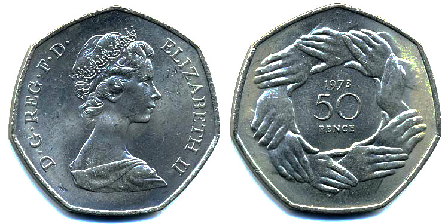
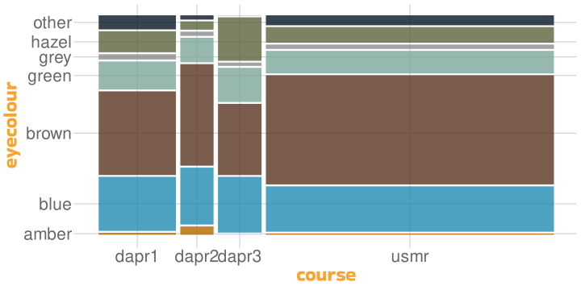

Nominal Data
Univariate Statistics and Methodology using R
Martin Corley
Psychology, PPLS
University of Edinburgh
Binomial Test
Last Week
the \(t\)-test and \(z\)-test deal with interval (at least) data
they can compare continuous data to a distribution with
- known \(\mu\) and \(\sigma\) (\(z\)-test)
- known \(\mu\) and unknown \(\sigma\) (one-sample \(t\)-test)
- they can compare continuous data from two samples
- independent groups (independent-samples \(t\)-test)
- related groups (paired-samples \(t\)-test)
Not Everything is Numbers
sometimes the things we are interested in aren’t numeric
fashionable or not?
heads or tails?
USMR student or not?

Binomial Distribution

two possible outcomes with fixed probabilities \(p\) and \(1-p\)
with enough trials, proportion of outcomes will be \(p\) and \(1-p\)
- the number of trials (\(n\)) is fixed
- each observation is independent
- each observation has one of two outcomes
- the probability of each outcome is consistent
Binomial?
- a fair coin is tossed 20 times
- \(x\) = # of heads
- draw 3 cards at random without replacement
- \(x\) = # of diamonds
- draw 3 cards at random with replacement
- \(x\) = # of diamonds
- the probability of having blood type B is .1; choose 4 people at random.
- \(x\) = # with type B
Binomial Distribution
- toss a coin 100 times
- how many “successes” (=heads, say) are you likely to get?
Binomial Test
if you toss a coin 4 times, what’s the probability of it landing on heads at least 3 times?
\(2^4 = 16\) possible sequences of outcomes
Of those 16, 5 outcomes include \(\ge\) 3 heads
\(p = 5/16 = .3125\)
| Toss1 | Toss2 | Toss3 | Toss4 | HEADS |
|---|---|---|---|---|
| H | H | H | H | 4 |
| T | H | H | H | 3 |
| H | T | H | H | 3 |
| T | T | H | H | 2 |
| H | H | T | H | 3 |
| T | H | T | H | 2 |
| H | T | T | H | 2 |
| T | T | T | H | 1 |
| H | H | H | T | 3 |
| T | H | H | T | 2 |
| H | T | H | T | 2 |
| T | T | H | T | 1 |
| H | H | T | T | 2 |
| T | H | T | T | 1 |
| H | T | T | T | 1 |
| T | T | T | T | 0 |
Binomial Test
Exact binomial test
data: 3 and 4
number of successes = 3, number of trials = 4, p-value = 0.3125
alternative hypothesis: true probability of success is greater than 0.5
95 percent confidence interval:
0.2486046 1.0000000
sample estimates:
probability of success
0.75 - don’t be fooled by the
probability of successwhich is just 3/4
Binomial Test (2)
approximately 9% of the world’s population have blue eyes; is the USMR class of 2024–25 a representative sample?
Eye Colours for USMR
Binomial Test
- approximately 9% of the world’s population have blue eyes
Exact binomial test
data: eyes["blue"] and sum(eyes)
number of successes = 18, number of trials = 76, p-value = 0.0001
alternative hypothesis: true probability of success is not equal to 0.09
95 percent confidence interval:
0.1468 0.3482
sample estimates:
probability of success
0.2368 THe \(\chi^2\) Distribution
Goodness-of-Fit Test
so what happens when we are interested in more than two outcomes?
we have already talked about dice “numbers” being categories
we know that, in a fair die, the probability of getting each number is \(\frac{1}{6}\) (H0)
can we assess the probability of getting a known set of throws if H0 is true?
if the probability is low enough (\(p<.05\)) we can assert that the die is biased

Calculating \(\chi^2\)
let’s assume we throw the die 600 times
if everything worked out perfectly for an unbiased die, our expected values would be:
- and we can calculate a \(\chi^2\) statistic using the formula
\[\chi^2 = \sum{\frac{(O_i-E_i)^2}{E_i}}\] where \(O_i\) is the \(i\textrm{th}\) observed and \(E_i\) is the \(i\textrm{th}\) expected value
Calculating \(\chi^2\)
we don’t have to do this calculation by hand
we can do it piece-by-piece, starting with 600 throws I’ve ‘recorded’
6 3 3 3 1 5 4 6 4 6 2 4 6 6 2 6 1 5 6 1 4 6 4 2 1 1 1 4 1 3 2 3 3 6 1 1 6 6 6 2 3 1 2 6 1 5 3 6 3 5 1 5 1 4 4 3 3 1 3 6 2 4 5 3 4 4 2 5 5 6 3 2 2 6 6 3 1 2 1 6 ...Calculating \(\chi^2\)
expected observed
1 100 92
2 100 124
3 100 102
4 100 96
5 100 77
6 100 109\[\chi^2 = \sum{\frac{(O_i-E_i)^2}{E_i}}\]
Calculating \(\chi^2\)
Calculating \(\chi^2\)
Calculating \(\chi^2\)
Calculating \(\chi^2\)
expected observed sq_diff std_sq_diff
1 100 92 64 0.64
2 100 124 576 5.76
3 100 102 4 0.04
4 100 96 16 0.16
5 100 77 529 5.29
6 100 109 81 0.81- df = \(\textrm{number of groups}-1 = 5\)
\[\chi^2 = \sum{\color{red}{\frac{(O_i-E_i)^2}{E_i}}}\]
\[\chi^2 = \color{red}{\sum{\frac{(O_i-E_i)^2}{E_i}}}\]
Evaluating \(\chi^2\)
so for the particular random throws we did, \(\chi^2=12.7\)
what we want to know is how probable that value is in a world where chance governs dice throws
we already know two important things
- we’re going to have to work out the distribution of \(\chi^2\) and work out the probability of getting that value or more
- \(\chi^2\) is always one-tailed
- the reason we’re calling the value we’ve calculated \(\chi^2\) is because we’re going to compare it to the \(\chi^2\) distribution
Why do Things the Easy Way?
- calculate and plot 10,000 random 600-fair-dice-throw \(\chi^2\)s

The \(\chi^2\) Distribution
\(\chi^2\) Probability
for our random 600 dice throws a couple of slides back
- \(\chi^2=12.7\), \(\textrm{df} = 5\)
we can use
pchisq()
[1] 0.02636
- looks like we can conclude that our die is unlikely to be fair
Two-Dimensional \(\chi^2\)
Types of \(\chi^2\) Test
what we’ve just seen is a goodness of fit calculation
- do the data come from a specific distribution?
test of homogeneity
- do groups have same distribution of a variable of interest?
test of independence
- are categorical variables associated with each other?
| course | Elsewhere | UK |
|---|---|---|
| dapr1 | 9 | 49 |
| dapr2 | 5 | 21 |
| rms2 | 9 | 29 |
| usmr | 17 | 27 |
Teaching in 2020
- 2020 data from all of the stats modules in Psychology
- contingency tables
Under the Null Hypothesis
students on each module would be equally likely to be in the UK
in other words, of the 58 students on dapr1, \(\frac{126}{166}\times{}58\), or approx 44.02 students, should be in the UK under H0
in_uk
course Elsewhere UK Sum
dapr1 9 49 58
dapr2 5 21 26
rms2 9 29 38
usmr 17 27 44
Sum 40 126 166we can repeat this calculation for each cell of the table, to give “expected values”
- like the probability-based values for dice
Expected Values
- repeating the calculation is easy using the “outer product (\(\otimes\))” operator
%o%in R (this takes two vectors and multiplies them out into a matrix)
\[ (a,b) \otimes (y, z) = \begin{bmatrix} a \times y & b \times y \\ a \times z & b \times z \\ \end{bmatrix} \]
Expected Values
- repeating the calculation is easy using the “outer product (\(\otimes\))” operator
%o%in R (this takes two vectors and multiplies them out into a matrix)
Restating the Null Hypothesis
under H0:
knowing which class people are in gives no additional information about where they come from
knowing where they’re from gives no additional information about which class they’re in
observed
in_uk
course Elsewhere UK
dapr1 9 49
dapr2 5 21
rms2 9 29
usmr 17 27expected
Elsewhere UK
dapr1 13.976 44.02
dapr2 6.265 19.73
rms2 9.157 28.84
usmr 10.602 33.40Using plot()

Are The Courses Different?

Bonus: Eye Colours: All Years
- are USMR eyes different from estimated world proportions?
Bonus: Eye Colours
- are eye colours different between stats classes?
References
Bartoš, F., Sarafoglou, A., Godmann, H. R., Sahrani, A., Leunk, D. K., Gui, P. Y., Voss, D., Ullah, K., Zoubek, M. J., Nippold, F., Aust, F., Vieira, F. F., Islam, C.-G., Zoubek, A. J., Shabani, S., Petter, J., Roos, I. B., Finnemann, A., Lob, A. B., … Wagenmakers, E.-J. (2024). Fair coins tend to land on the same side they started: Evidence from 350,757 flips. https://arxiv.org/abs/2310.04153